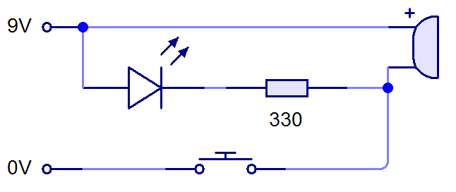
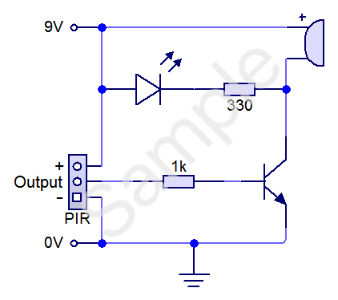
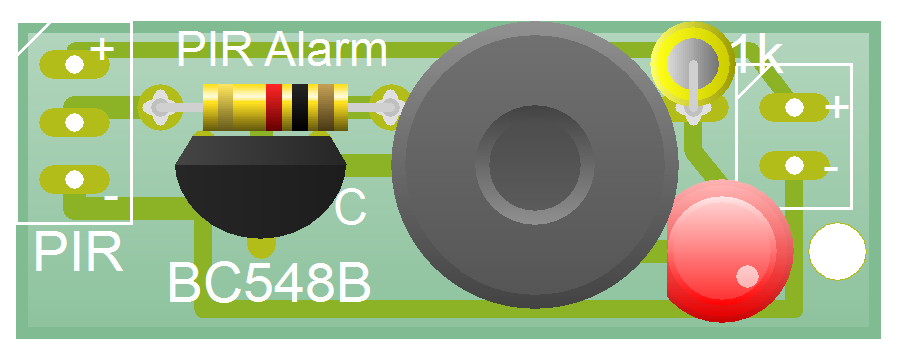
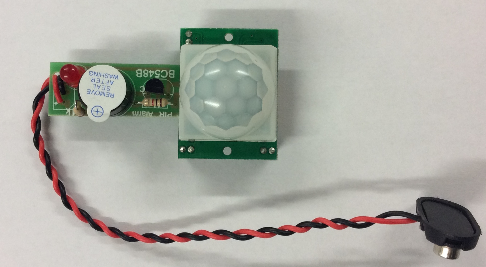

Quick Makes
Motion Alarm
Learn It
- In this topc, you'll make a series of small projects that go together quickly and teach different principals of electronics.
- We'll start with a motion detector that uses the same technology that is found in burglar alarms.
- Everything emits some low-level radiation. The hotter something is, the greater the amount of radiation emitted.
- People have a standard operating temperature of 37 degrees Celcius, which (when indoors) is typically hotter than the area around it.
- Burglar alarms that detect movement use Passive Infrared (PIR for short) sensors to detect changes in the amount of IR present in the area they're working in.
- A PIR sensor actually has two sensors inside it. When one sensor suddenly detects an increase in IR radiation compared to what the other one is seeing, it sends a signal to whatever device it is connected to (like an alarm bell or PIC circuit) to take appropriate action.
Learn It
- Our circuit needs to be able to turn on an LED and a buzzer when motion is detected.

- In the circuit above, the LED and buzzer are turned on when the PTM switch is pushed. This is a good start, but it needs a human to push the button when intruders are detected.
- We can improve things by adding a PIR sensor and transistor. The circuit we will make today is this:

- When a 9V battery is connected, the circuit will do nothing until the PIR detects movement. The LED can't light up and the buzzer can't make a sound because there is a transistor between the + and - terminals of the battery (acting like the switch in the previous circuit diagram).
- Once movement is detected, the PIR sends a signal to the base of the transistor. When the base leg receives a voltage, it acts like a switch, allowing current to flow through the other legs of the transistor. As a result, the LED lights up, and the buzzer will make a sound.
Build It
- When you first get your PCB, it will look like this:

- Start by soldering the two 1k resistors onto the board. You'll need to ensure that the one on the right-hand side stands up vertically.
- With these in place, solder in your LED. The positive (longer) leg needs to be pointing towards the right-hand edge of the PCB.
- Next, get a BC548B transistor (a BC547B is also fine) from the component drawers, and solder it into the PCB. Ensure that the flat edge of the transistor is facing the 1k resistor.
- Get an active buzzer next. You'll see that there is a + marked on the top of the buzzer, which needs to be at the top of the PCB (near the two 1k resistors).
- Power is next to go in.
- Obtain a PP3 battery snap, and twist the wires together just like in my photo below.
- Pass both wires through the 3mm hole in the bottom-right hand corner of the PCB, then poke the red wire through the '+' solder point (top-right corner) and the black one through the '-' leg below it.
- Solder the wires into place, trying to keep the wire insulation pushed against the PCB surface to avoid any bare wires being able to touch one another in future.
- Using the 3mm hole like this provides what we call 'strain relief' and will prevent the battery wires from snapping off over time.
- Get a PIR sensor module from your teacher, and place the three pins at the borrom through the remaining 3 holes on the left-hand side of the PCB. Solder the three pins into place.
- Connect the circuit to a 9V power supply and test it works.

- The PIR has two adjustment potentiometers on the bottom of the unit (they look like small orange screws). The one labelled 'Tx' changes how long the buzzer and LED remain on for when triggered. Being turned all the way anti-clockwise will leave them on for about 3s; all the way to the right leaves them on for several hours. I recommend you leave it turned all the way anti-clockwise while testing.
- Thpe potentiometer labelled 'Sx' sets the sensitivity of the PIR. If turned all the way anti-clockwise, the sensor will have a working range of about 1m and need something large to set it off. The opposite direction increases the range to about 6m; perfect as an intruder alarm for your bedroom door, for instance.
Badge It
- Silver: Solder together a neat, working PIR sensor. Upload a photo of the solder-side of your board as evidence.
- Gold: Write a short explanation in your own words of how this circuit works.
- Platinum: The plastic cap on the PIR sensor is called a Fresnel lens (pronounced 'frenel'). You can gently lift this off your PIR module to see the IR sensor underneath - you'll find that the unit doesn't work without it though. Do some online research and write a short explanation of what it does and why it's necessary.